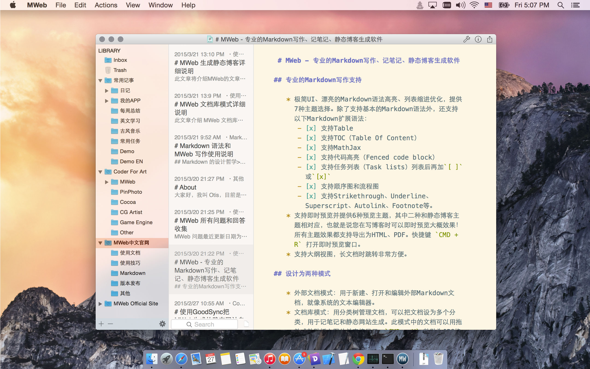

继续阅读 →中文：http://zh.mweb.im
英文：http://www.mweb.im
CMD+Shift+V 粘贴 PNG 格式图片[ ]或[x]这次更新中，greyshade、octopress 博客主题模板有变动！由于增加了可设置评论和分类、勾选支持 MathJax 和顺序图、流程图，所以增加了以下三个变量：
{{ commentAndShareCode }}
{{ seqAndFlowChartSupport }}
{{ mathJaxSupport }}
greyshade、octopress 博客主题模板有更新到的页为 footer.html 和 post.html。
footer.html 会在 {{ siteOther }} 上增加 {{ seqAndFlowChartSupport }} 和 {{ mathJaxSupport }}。
可参考这个网址：https://github.com/oulvhai/MWeb-Themes/blob/master/greyshade/footer.html
post.html 则在要放评论和分享的地方增加 {{ commentAndShareCode }}。
可参考这个网址：https://github.com/oulvhai/MWeb-Themes/blob/master/greyshade/post.html
此文章将介绍如何增加多说、Disqus 的评论和JiaThis、AddThis 的分享。
继续阅读 →此文章将介绍MWeb的文章类型和生成静态博客的设置情况。
继续阅读 →